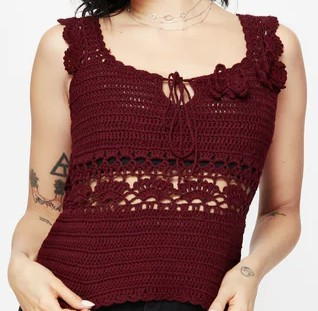
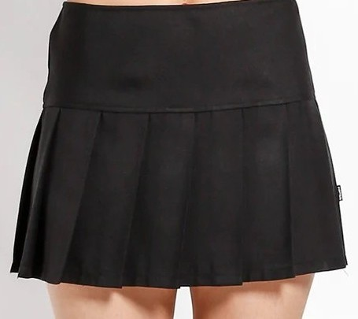
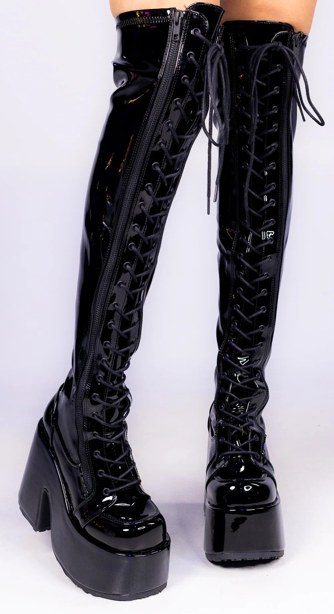

Mix and Match
Use the arrows to browse through tops, bottoms, and shoes. Try changing one category at a time to see how the outfit shifts.



Use the arrows to browse through tops, bottoms, and shoes. Try changing one category at a time to see how the outfit shifts.


